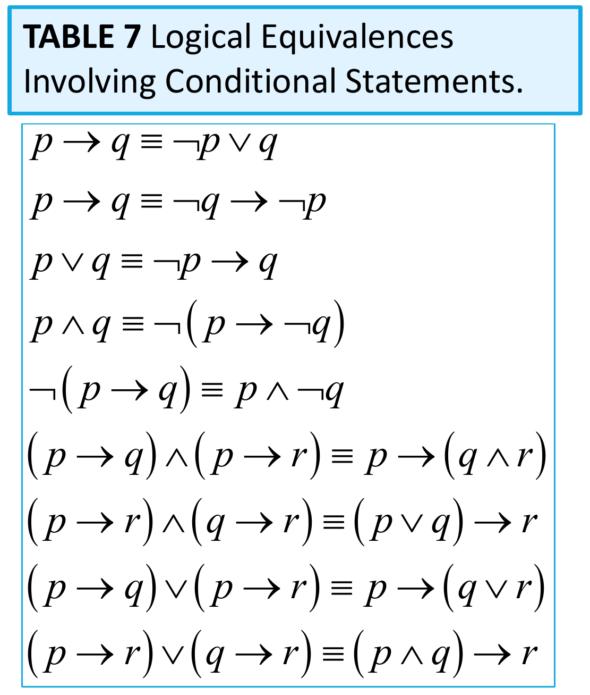
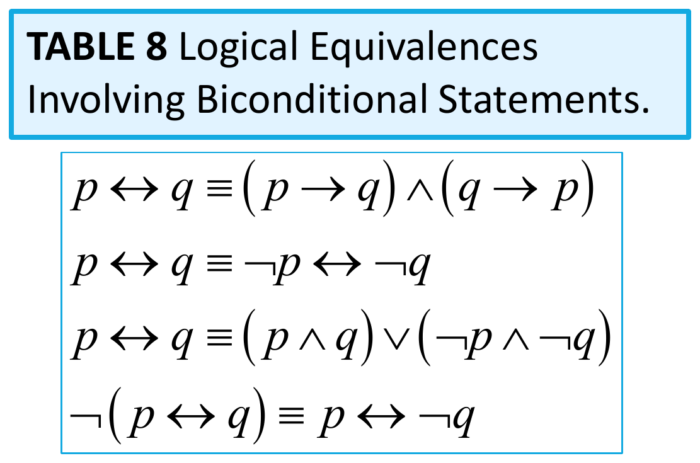

Chapter 1
The Foundations: Logic and Proofs
Warm-Up: The Menu
“Soup or salad comes with this entrée.”
You ask for both. The server refuses.
Vote — is the server wrong to refuse?
A. Yes
B. No
Warm-Up: The Syllabus
“If you turn in every lab, you pass the course.”
Dana passed the course.
Vote — does it follow that Dana turned in every lab?
A. Yes
B. No
Warm-Up: This Class
“This class is not both hard and boring.”
Vote — does that mean it is not hard, and also not boring?
A. Yes
B. No
Warm-Up: The Catch
All three claims are false — and English is why.
| Where intuition slipped | Today’s fix |
|---|---|
| 1. or means two different things | give or exactly one meaning |
| 2. if is not the same as only if | give them separate notation |
| 3. not both is not neither | check all four cases in a table |
Propositional logic is English with the ambiguity taken out — every word gets one fixed meaning, written down in a table, read the same way by everyone.
Where This Chapter Goes
- Propositional Logic (1.1–1.3)
- The Language of Propositions
- Applications
- Logical Equivalences
- Predicate Logic (1.4)
- The Language of Quantifiers
- Logical Equivalences
- Proofs (1.6–1.7)
- Rules of Inference
- Proof Methods
Section 1.1
Propositional Logic
Today’s Plan
- Propositions
- Connectives
- Negation
- Conjunction
- Disjunction
- Implication; contrapositive, inverse, converse
- Biconditional
- Truth Tables
Propositions
A proposition is a declarative sentence that is either true or false.
Are these propositions?
- The Moon is made of green cheese. ✓
- Trenton is the capital of New Jersey. ✓
- Toronto is the capital of Canada. ✓
- \(1 + 0 = 1\) ✓
- \(0 + 0 = 2\) ✓
- Sit down! ✗
- What time is it? ✗
- \(x + 1 = 2\) ✗
- \(x + y = z\) ✗
Propositional Logic
Constructing Propositions
- Propositional Variables: \(p\), \(q\), \(r\), \(s\), \(\ldots\)
- The proposition that is always true is denoted by \(\mathbf{T}\) and the proposition that is always false is denoted by \(\mathbf{F}\).
- Compound Propositions — constructed from logical connectives and other propositions
- Negation \(\neg\)
- Conjunction \(\wedge\)
- Disjunction \(\vee\)
- Implication \(\rightarrow\)
- Biconditional \(\leftrightarrow\)
Negation
The negation of a proposition \(p\) is denoted by \(\neg p\) and has this truth table:
| \(p\) | \(\neg p\) |
|---|---|
| T | F |
| F | T |
Example: If \(p\) denotes “The earth is round.”, then \(\neg p\) denotes
“It is not the case that the earth is round,” or more simply “The earth is not round.”
Conjunction
The conjunction of propositions \(p\) and \(q\) is denoted by \(p \wedge q\) and has this truth table:
| \(p\) | \(q\) | \(p \wedge q\) |
|---|---|---|
| T | T | T |
| T | F | F |
| F | T | F |
| F | F | F |
Example: If \(p\) denotes “I am at home.” and \(q\) denotes “It is raining.” then \(p \wedge q\) denotes
“I am at home and it is raining.”
Disjunction
The disjunction of propositions \(p\) and \(q\) is denoted by \(p \vee q\) and has this truth table:
| \(p\) | \(q\) | \(p \vee q\) |
|---|---|---|
| T | T | T |
| T | F | T |
| F | T | T |
| F | F | F |
Example: If \(p\) denotes “I am at home.” and \(q\) denotes “It is raining.” then \(p \vee q\) denotes
“I am at home or it is raining.”
Why Not Just English?
A teammate “simplifies” your access check during code review:
Vote — do these two lines behave the same?
A. Same
B. Different
Why Not Just English?
Write \(a\) for isAdmin and \(l\) for isLoggedIn:
| \(a\) | \(l\) | \(\neg(a \wedge l)\) | \(\neg a \wedge \neg l\) |
|---|---|---|---|
| T | T | F | F |
| T | F | T | F |
| F | T | T | F |
| F | F | T | T |
Two rows of four disagree — and row 2 is a logged-out admin walking straight in.
That is what the notation buys: not shorter writing, decidable writing.
Short-Circuit Evaluation
- \(p \wedge q\) is Java’s
p && q - \(p \vee q\) is Java’s
p || q
Look at the last two rows of the \(\wedge\) table: when \(p\) is F, the conjunction is F whatever \(q\) turns out to be — so Java never bothers to evaluate \(q\). Short-circuit evaluation is a truth table doing real work.
The Connective Or in English
In English “or” has two distinct meanings.
- “Inclusive Or” — In the sentence “Students who have taken CS202 or Math120 may take this class,” we assume that students need to have taken one of the prerequisites, but may have taken both. This is the meaning of disjunction. For \(p \vee q\) to be true, either one or both of \(p\) and \(q\) must be true.
The Connective Or in English
- “Exclusive Or” — When reading the sentence “Soup or salad comes with this entrée,” we do not expect to be able to get both soup and salad. This is the meaning of Exclusive Or (Xor). In \(p \oplus q\), one of \(p\) and \(q\) must be true, but not both. The truth table for \(\oplus\) is:
| \(p\) | \(q\) | \(p \oplus q\) |
|---|---|---|
| T | T | F |
| T | F | T |
| F | T | T |
| F | F | F |
The Connective Or in English
\(\oplus\) is not a fifth connective to memorize — it is shorthand for something you can already write:
| \(p\) | \(q\) | \(p \vee q\) | \(\neg(p \wedge q)\) | \((p \vee q) \wedge \neg(p \wedge q)\) | \(p \oplus q\) |
|---|---|---|---|---|---|
| T | T | T | F | F | F |
| T | F | T | T | T | T |
| F | T | T | T | T | T |
| F | F | F | T | F | F |
The last two columns match — English’s exclusive or is already expressible with \(\vee\), \(\wedge\), and \(\neg\).
Implication
If \(p\) and \(q\) are propositions, then \(p \rightarrow q\) is a conditional statement or implication which is read as “if \(p\), then \(q\)” and has this truth table:
| \(p\) | \(q\) | \(p \rightarrow q\) |
|---|---|---|
| T | T | T |
| T | F | F |
| F | T | T |
| F | F | T |
Implication
Example: If \(p\) denotes “I am at home.” and \(q\) denotes “It is raining.” then \(p \rightarrow q\) denotes “If I am at home then it is raining.”
In \(p \rightarrow q\), \(p\) is the hypothesis (antecedent or premise) and \(q\) is the conclusion (or consequence).
Understanding Implication
- In \(p \rightarrow q\) there does not need to be any connection between the antecedent or the consequent. The “meaning” of \(p \rightarrow q\) depends only on the truth values of \(p\) and \(q\).
These implications are perfectly fine, but would not be used in ordinary English.
- “If the moon is made of green cheese, then I have more money than Bill Gates.”
- “If the moon is made of green cheese then I’m on welfare.”
- “If \(1 + 1 = 3\), then your grandma wears combat boots.”
Understanding Implication
One way to view the logical conditional is to think of an obligation or contract.
- “If I am elected, then I will lower taxes.”
- “If you get 100% on the final, then you will get an A.”
If the politician is elected and does not lower taxes, then the voters can say that he or she has broken the campaign pledge. Something similar holds for the professor. This corresponds to the case where \(p\) is true and \(q\) is false.
Expressing \(p \rightarrow q\)
- if \(p\), then \(q\)
- if \(p\), \(q\)
- \(q\) unless \(\neg p\)
- \(q\) if \(p\)
- \(q\) whenever \(p\)
- \(q\) follows from \(p\)
- a necessary condition for \(p\) is \(q\)
- \(p\) implies \(q\)
- \(p\) only if \(q\)
- \(q\) when \(p\)
- \(p\) is sufficient for \(q\)
- \(q\) is necessary for \(p\)
- a sufficient condition for \(q\) is \(p\)
Point the Arrow
Let \(g\): “you graduate.” \(p\): “you pass CSCI 2322.”
Point left or right — which way does the arrow go?
- You can graduate only if you pass 2322. \(g \rightarrow p\)
- You graduate whenever you pass 2322. \(p \rightarrow g\)
- Passing 2322 is necessary for graduating. \(g \rightarrow p\)
- Passing 2322 is sufficient for graduating. \(p \rightarrow g\)
- You graduate unless you fail 2322. \(p \rightarrow g\)
Related Conditionals
From \(p \rightarrow q\) we can form new conditional statements.
- \(q \rightarrow p\) is the converse of \(p \rightarrow q\)
- \(\neg q \rightarrow \neg p\) is the contrapositive of \(p \rightarrow q\)
- \(\neg p \rightarrow \neg q\) is the inverse of \(p \rightarrow q\)
Related Conditionals
Example: Find the converse, inverse, and contrapositive of “It is raining is a sufficient condition for me not going to town.”
Solution:
- converse: If I do not go to town, then it is raining.
- inverse: If it is not raining, then I will go to town.
- contrapositive: If I go to town, then it is not raining.
Biconditional
If \(p\) and \(q\) are propositions, then we can form the biconditional proposition \(p \leftrightarrow q\), read as “\(p\) if and only if \(q\).” The biconditional \(p \leftrightarrow q\) denotes the proposition with this truth table:
| \(p\) | \(q\) | \(p \leftrightarrow q\) |
|---|---|---|
| T | T | T |
| T | F | F |
| F | T | F |
| F | F | T |
Example: If \(p\) denotes “I am at home.” and \(q\) denotes “It is raining.” then \(p \leftrightarrow q\) denotes “I am at home if and only if it is raining.”
Expressing the Biconditional
Some alternative ways “\(p\) if and only if \(q\)” is expressed in English:
- \(p\) is necessary and sufficient for \(q\)
- if \(p\) then \(q\), and conversely
- \(p\) if \(q\)
Truth Tables
Construction of a truth table:
- Rows — need a row for every possible combination of values for the atomic propositions.
- Columns
- Need a column for the compound proposition (usually at far right)
- Need a column for the truth value of each expression that occurs in the compound proposition as it is built up. This includes the atomic propositions.
Example Truth Table
Example: Construct a truth table for \(p \vee q \rightarrow \neg r\).
| \(p\) | \(q\) | \(r\) | \(\neg r\) | \(p \vee q\) | \(p \vee q \rightarrow \neg r\) |
|---|---|---|---|---|---|
| T | T | T | F | T | F |
| T | T | F | T | T | T |
| T | F | T | F | T | F |
| T | F | F | T | T | T |
| F | T | T | F | T | F |
| F | T | F | T | T | T |
| F | F | T | F | F | T |
| F | F | F | T | F | T |
Equivalent Propositions
Two propositions are equivalent if they always have the same truth value.
Example: Show using a truth table that the conditional is equivalent to the contrapositive.
Solution:
| \(p\) | \(q\) | \(\neg p\) | \(\neg q\) | \(p \rightarrow q\) | \(\neg q \rightarrow \neg p\) |
|---|---|---|---|---|---|
| T | T | F | F | T | T |
| T | F | F | T | F | F |
| F | T | T | F | T | T |
| F | F | T | T | T | T |
Problem
Example: How many rows are there in a truth table with \(n\) propositional variables?
Solution: \(2^n\)
Operator Precedence
| Operator | Precedence |
|---|---|
| \(\neg\) | 1 |
| \(\wedge\) | 2 |
| \(\vee\) | 3 |
| \(\rightarrow\) | 4 |
| \(\leftrightarrow\) | 5 |
\(p \vee q \rightarrow \neg r\) is equivalent to \((p \vee q) \rightarrow \neg r\).
If the intended meaning is \(p \vee (q \rightarrow \neg r)\) then parentheses must be used.
Section 1.2
Applications of Propositional Logic
Section Summary
- Translating English to Propositional Logic
- System Specifications
- Logic Puzzles
- Logic Circuits
Translating English Sentences
Steps to convert an English sentence to a statement in propositional logic:
- Identify atomic propositions and represent using propositional variables.
- Determine appropriate logical connectives
Translating English Sentences
Example: “If I go to school or to the gym, I will not go shopping.”
- \(p\): I go to school
- \(q\): I go to the gym
- \(r\): I will go shopping
Solution: If \(p\) or \(q\) then not \(r\).
\[(p \vee q) \rightarrow \neg r\]
Example
Problem: Translate the following sentence into propositional logic:
“You can access the Internet from campus only if you are a computer science major or you are not a freshman.”
One Solution: Let \(a\), \(c\), and \(f\) represent respectively “You can access the internet from campus,” “You are a computer science major,” and “You are a freshman.”
\[a \rightarrow (c \vee \neg f)\]
System Specifications
System and Software engineers take requirements in English and express them in a precise specification language based on logic.
Example: Express in propositional logic: “The automated reply cannot be sent when the file system is full.”
Solution: One possible solution: Let \(p\) denote “The automated reply can be sent” and \(q\) denote “The file system is full.”
\[q \rightarrow \neg p\]
Consistent Specifications
Definition: A list of propositions is consistent if it is possible to assign truth values to the proposition variables so that each proposition is true.
Exercise: Are these specifications consistent?
- “The diagnostic message is stored in the buffer or it is retransmitted.”
- “The diagnostic message is not stored in the buffer.”
- “If the diagnostic message is stored in the buffer, then it is retransmitted.”
Consistent Specifications
Solution: Let \(p\) denote “The diagnostic message is stored in the buffer.” Let \(q\) denote “The diagnostic message is retransmitted.” The specification can be written as \(p \vee q\), \(\neg p\), \(p \rightarrow q\). When \(p\) is false and \(q\) is true all three statements are true. So the specification is consistent.
Exercise (continued): What if “The diagnostic message is not retransmitted” is added?
Solution: Now we are adding \(\neg q\) and there is no satisfying assignment. So the specification is not consistent.
Logic Puzzles
An island has two kinds of inhabitants, knights, who always tell the truth, and knaves, who always lie.
You go to the island and meet A and B.
- A says “B is a knight.”
- B says “The two of us are of opposite types.”
Example: What are the types of A and B?
Logic Puzzles
Solution: Let \(p\) and \(q\) be the statements that A is a knight and B is a knight, respectively. So, then \(\neg p\) represents the proposition that A is a knave and \(\neg q\) that B is a knave.
- If A is a knight, then \(p\) is true. Since knights tell the truth, \(q\) must also be true. Then \((p \wedge \neg q) \vee (\neg p \wedge q)\) would have to be true, but it is not. So, A is not a knight and therefore \(\neg p\) must be true.
- If A is a knave, then B must not be a knight since knaves always lie. So, then both \(\neg p\) and \(\neg q\) hold since both are knaves.
Logic Circuits
Studied in depth in Chapter 12.
Electronic circuits; each input/output signal can be viewed as a 0 or 1.
- 0 represents False
- 1 represents True
Complicated circuits are constructed from three basic circuits called gates.

Logic Circuits
- The inverter (NOT gate) takes an input bit and produces the negation of that bit.
- The OR gate takes two input bits and produces the value equivalent to the disjunction of the two bits.
- The AND gate takes two input bits and produces the value equivalent to the conjunction of the two bits.
Logic Circuits
More complicated digital circuits can be constructed by combining these basic circuits to produce the desired output given the input signals by building a circuit for each piece of the output expression and then combining them. For example:

Section 1.3
Propositional Equivalences
Today’s Plan
- Tautologies, contradictions, and contingencies
- Logical equivalence
- De Morgan’s laws
- Key logical equivalences
- Equivalence proofs
- Propositional satisfiability
Warm-Up: Always or Never?
For each proposition: is it always true, never true, or does it depend on the variables?
Vote — always, never, or depends?
- \(p \vee \neg p\) always
- \(p \wedge \neg p\) never
- \(p \rightarrow \neg p\) depends — true when \(p\) is F
- \((p \wedge q) \rightarrow p\) always
Each of these three kinds has a name.
Three Kinds of Propositions
- A tautology is a proposition which is always true, e.g. \(p \vee \neg p\).
- A contradiction is a proposition which is always false, e.g. \(p \wedge \neg p\).
- A contingency is a proposition which is neither a tautology nor a contradiction, such as \(p\) or \(p \rightarrow \neg p\).
| \(p\) | \(\neg p\) | \(p \vee \neg p\) | \(p \wedge \neg p\) |
|---|---|---|---|
| T | F | T | F |
| F | T | T | F |
Why It Matters: Dead Code
Vote — for each if: tautology, contradiction, or contingency?
- A is a tautology — the test is pointless,
refresh()always runs. - B is a contradiction —
refund()is dead code and never runs.
Compilers and IDEs flag both (“condition is always true / false”) by checking exactly the definitions on the previous slide. A contingency is the only kind of condition worth writing.
Logically Equivalent
- Two compound propositions \(p\) and \(q\) are logically equivalent if \(p \leftrightarrow q\) is a tautology.
- We write this as \(p \equiv q\) (or as \(p \Leftrightarrow q\)), where \(p\) and \(q\) are compound propositions.
- Two compound propositions \(p\) and \(q\) are equivalent if and only if the columns in a truth table giving their truth values agree.
Logically Equivalent
Example: Show that \(\neg p \vee q\) is equivalent to \(p \rightarrow q\).
Solution:
| \(p\) | \(q\) | \(\neg p\) | \(\neg p \vee q\) | \(p \rightarrow q\) |
|---|---|---|---|---|
| T | T | F | T | T |
| T | F | F | F | F |
| F | T | T | T | T |
| F | F | T | T | T |
The last two columns agree, so \(\neg p \vee q \equiv p \rightarrow q\).
De Morgan’s Laws
Augustus De Morgan (1806–1871)
\[\neg(p \wedge q) \equiv \neg p \vee \neg q\] \[\neg(p \vee q) \equiv \neg p \wedge \neg q\]
Remember the warm-up? “This class is not both hard and boring” is \(\neg(h \wedge b) \equiv \neg h \vee \neg b\): not hard, or not boring.
De Morgan’s Laws
Example: Use a truth table to show that De Morgan’s second law holds.
Fill in the last two columns.
| \(p\) | \(q\) | \(\neg p\) | \(\neg q\) | \(p \vee q\) | \(\neg(p \vee q)\) | \(\neg p \wedge \neg q\) |
|---|---|---|---|---|---|---|
| T | T | F | F | T | F | F |
| T | F | F | T | T | F | F |
| F | T | T | F | T | F | F |
| F | F | T | T | F | T | T |
De Morgan’s Laws in English
Vote — which sentence is the negation of “The server is up and the database is reachable”?
A. The server is down and the database is unreachable.
B. The server is down or the database is unreachable.
C. The server is up or the database is reachable.
D. The server is down and the database is reachable.
B — \(\neg(u \wedge r) \equiv \neg u \vee \neg r\): negating an and gives an or.
Key Logical Equivalences
- Identity laws: \(p \wedge \mathbf{T} \equiv p\), \(\quad p \vee \mathbf{F} \equiv p\)
- Domination laws: \(p \vee \mathbf{T} \equiv \mathbf{T}\), \(\quad p \wedge \mathbf{F} \equiv \mathbf{F}\)
- Idempotent laws: \(p \vee p \equiv p\), \(\quad p \wedge p \equiv p\)
- Double negation law: \(\neg(\neg p) \equiv p\)
- Negation laws: \(p \vee \neg p \equiv \mathbf{T}\), \(\quad p \wedge \neg p \equiv \mathbf{F}\)
Key Logical Equivalences
- Commutative laws: \(p \vee q \equiv q \vee p\), \(\quad p \wedge q \equiv q \wedge p\)
- Associative laws: \((p \vee q) \vee r \equiv p \vee (q \vee r)\), \(\quad (p \wedge q) \wedge r \equiv p \wedge (q \wedge r)\)
- Distributive laws: \(p \vee (q \wedge r) \equiv (p \vee q) \wedge (p \vee r)\), \(\quad p \wedge (q \vee r) \equiv (p \wedge q) \vee (p \wedge r)\)
- De Morgan’s laws: \(\neg(p \wedge q) \equiv \neg p \vee \neg q\), \(\quad \neg(p \vee q) \equiv \neg p \wedge \neg q\)
- Absorption laws: \(p \vee (p \wedge q) \equiv p\), \(\quad p \wedge (p \vee q) \equiv p\)
Name That Law
Call out the law that justifies each step.
- \(p \vee (p \wedge q) \equiv p\) absorption
- \(q \wedge \mathbf{F} \equiv \mathbf{F}\) domination
- \(\neg(\neg r) \equiv r\) double negation
- \(p \vee (q \wedge r) \equiv (p \vee q) \wedge (p \vee r)\) distributive
- \((p \vee q) \vee r \equiv p \vee (q \vee r)\) associative
- \(\neg(p \vee q) \equiv \neg p \wedge \neg q\) De Morgan
More Logical Equivalences


Tables 7 and 8 are provided on exams.
Constructing Equivalences
- We can show that two expressions are logically equivalent by developing a series of logically equivalent statements.
- To prove that \(A \equiv B\) we produce a series of equivalences beginning with \(A\) and ending with \(B\): \[A \equiv A_1 \equiv A_2 \equiv \cdots \equiv A_n \equiv B\]
- Keep in mind that whenever a proposition (represented by a propositional variable) occurs in the equivalences listed earlier, it may be replaced by an arbitrarily complex compound proposition.
Equivalence Proofs
Example: Show that \(\neg(p \vee (\neg p \wedge q))\) is logically equivalent to \(\neg p \wedge \neg q\).
Solution:
| Step | Reason |
|---|---|
| \(\neg(p \vee (\neg p \wedge q))\) | |
| \(\equiv \neg p \wedge \neg(\neg p \wedge q)\) | second De Morgan law |
| \(\equiv \neg p \wedge [\neg(\neg p) \vee \neg q]\) | first De Morgan law |
| \(\equiv \neg p \wedge (p \vee \neg q)\) | double negation law |
| \(\equiv (\neg p \wedge p) \vee (\neg p \wedge \neg q)\) | second distributive law |
Equivalence Proofs
Solution (continued): Show that \(\neg(p \vee (\neg p \wedge q))\) is logically equivalent to \(\neg p \wedge \neg q\).
| Step | Reason |
|---|---|
| \((\neg p \wedge p) \vee (\neg p \wedge \neg q)\) | from the previous slide |
| \(\equiv \mathbf{F} \vee (\neg p \wedge \neg q)\) | because \(\neg p \wedge p \equiv \mathbf{F}\) |
| \(\equiv (\neg p \wedge \neg q) \vee \mathbf{F}\) | commutative law for disjunction |
| \(\equiv \neg p \wedge \neg q\) | identity law for \(\mathbf{F}\) |
Equivalence Proofs
Example: Show that \((p \wedge q) \rightarrow (p \vee q)\) is a tautology.
Solution:
| Step | Reason |
|---|---|
| \((p \wedge q) \rightarrow (p \vee q)\) | |
| \(\equiv \neg(p \wedge q) \vee (p \vee q)\) | by \(p \rightarrow q \equiv \neg p \vee q\) |
| \(\equiv (\neg p \vee \neg q) \vee (p \vee q)\) | first De Morgan law |
| \(\equiv (\neg p \vee p) \vee (\neg q \vee q)\) | associative and commutative laws for disjunction |
| \(\equiv \mathbf{T} \vee \mathbf{T}\) | negation law |
| \(\equiv \mathbf{T}\) | domination law |
Your Turn
Example: Show that \(p \wedge (\neg p \vee q) \equiv p \wedge q\).
Each step appears first — name the law before it is revealed.
| Step | Reason |
|---|---|
| \(p \wedge (\neg p \vee q)\) | |
| \(\equiv (p \wedge \neg p) \vee (p \wedge q)\) | distributive law |
| \(\equiv \mathbf{F} \vee (p \wedge q)\) | negation law |
| \(\equiv (p \wedge q) \vee \mathbf{F}\) | commutative law |
| \(\equiv p \wedge q\) | identity law |
Simplify It
Vote — which is equivalent to \((p \vee \neg p) \wedge q\)?
A. \(q\)
B. \(\mathbf{T}\)
C. \(p\)
D. \(\mathbf{F}\)
A — \((p \vee \neg p) \wedge q \equiv \mathbf{T} \wedge q \equiv q\) by the negation law, then the identity law.
Why It Matters: Gates
Section 1.2 built circuits from AND, OR, and NOT gates. Every gate costs chip area, power, and time.
\[(p \wedge q) \vee (p \wedge \neg q)\]
As written this circuit needs four gates: two ANDs, one NOT, one OR.
Vote — how many gates does it really need?
A. 0
B. 1
C. 2
D. 4
Why It Matters: Gates
Solution:
| Step | Reason |
|---|---|
| \((p \wedge q) \vee (p \wedge \neg q)\) | |
| \(\equiv p \wedge (q \vee \neg q)\) | distributive law |
| \(\equiv p \wedge \mathbf{T}\) | negation law |
| \(\equiv p\) | identity law |
A — zero gates: the output is just the wire \(p\). Circuit minimization (Chapter 12) is equivalence proofs at industrial scale.
Propositional Satisfiability
- A compound proposition is satisfiable if there is an assignment of truth values to its variables that makes it true. When no such assignment exists, the compound proposition is unsatisfiable.
- A compound proposition is unsatisfiable if and only if its negation is a tautology.
Deciding satisfiability is the SAT problem — the first problem ever shown to be NP-complete (Cook, 1971), and the engine behind chip verification and package dependency solvers.
Propositional Satisfiability
Example: Determine the satisfiability of the following compound propositions:
\[(p \vee \neg q) \wedge (q \vee \neg r) \wedge (r \vee \neg p)\]
Solution: Satisfiable. Assign \(\mathbf{T}\) to \(p\), \(q\), and \(r\).
\[(p \vee q \vee r) \wedge (\neg p \vee \neg q \vee \neg r)\]
Solution: Satisfiable. Assign \(\mathbf{T}\) to \(p\) and \(\mathbf{F}\) to \(q\).
Propositional Satisfiability
Example (continued): Determine the satisfiability of
\[\begin{aligned} (p \vee \neg q) \wedge (q \vee \neg r) \wedge (r \vee \neg p) \\ {}\wedge (p \vee q \vee r) \wedge (\neg p \vee \neg q \vee \neg r) \end{aligned}\]
Solution: Not satisfiable. Check each possible assignment of truth values to the propositional variables and none will make the proposition true.
Why: the first three clauses are true only when \(p\), \(q\), \(r\) all have the same value; the last two are true only when they do not.
Satisfiable or Not?
Vote — is \((p \vee q) \wedge (\neg p \vee q) \wedge \neg q\) satisfiable?
A. Satisfiable
B. Not satisfiable
B — by the distributive law, \((p \vee q) \wedge (\neg p \vee q) \equiv (p \wedge \neg p) \vee q \equiv q\), so the whole proposition is \(q \wedge \neg q \equiv \mathbf{F}\).
Why It Matters: Dependencies
Your project needs two packages, A and C:
- A requires library B, version 2
- C requires library B, version 1
- only one version of B can be installed at a time
Vote — can the installer satisfy this?
A. Yes
B. No
Why It Matters: Dependencies
Let \(a\), \(c\) mean “A / C is installed” and \(b_1\), \(b_2\) mean “B version 1 / 2 is installed.” The installer must make this true:
\[a \wedge c \wedge (a \rightarrow b_2) \wedge (c \rightarrow b_1) \wedge \neg(b_1 \wedge b_2)\]
B — unsatisfiable: \(a\) and \(c\) force \(b_2\) and \(b_1\), and the last clause forbids having both.
Dependency resolution is propositional satisfiability. conda ships a SAT solver for exactly this; pip’s resolver backtracks through the same search space, which is why a bad resolve can take minutes.
Section 1.4
Predicates and Quantifiers
Today’s Plan
- Predicates and propositional functions
- Quantifiers
- Universal quantifier \(\forall\)
- Existential quantifier \(\exists\)
- Translating English to logic
- Negating quantifiers
- De Morgan’s laws for quantifiers
Warm-Up: Socrates
“All men are mortal. Socrates is a man.”
Vote — does it follow that Socrates is mortal?
A. Yes
B. No
Obviously yes. Now try to show it with what we have so far.
Beyond Propositional Logic
- \(p\): “All men are mortal.” \(\quad q\): “Socrates is a man.” \(\quad r\): “Socrates is mortal.”
- In propositional logic these are three unrelated variables — nothing says \(p \wedge q \rightarrow r\).
- Can’t be represented in propositional logic. We need a language that talks about objects, their properties, and their relations.
- Later (Section 1.6) we’ll see how to draw the inference.
Introducing Predicate Logic
Predicate logic uses the following new features:
- Variables: \(x, y, z\)
- Predicates: \(P(x)\), \(M(x)\)
- Quantifiers (to be covered in a few slides)
Propositional functions are a generalization of propositions.
- They contain variables and a predicate, e.g., \(P(x)\)
- Variables can be replaced by elements from their domain.
Propositional Functions
- Propositional functions become propositions (and have truth values) when their variables are each replaced by a value from the domain (or bound by a quantifier, as we will see later).
- The statement \(P(x)\) is said to be the value of the propositional function \(P\) at \(x\).
- Often the domain is denoted by \(U\).
Propositional Functions
Example: \(P(x)\): “\(x > 0\)”, \(U\): the integers. Then:
- \(P(-3)\) F
- \(P(0)\) F
- \(P(3)\) T
Example: Let “\(x + y = z\)” be denoted by \(R(x, y, z)\) and \(U\) (for all three variables) be the integers. Find these truth values:
- \(R(2, -1, 5)\) F
- \(R(3, 4, 7)\) T
- \(R(x, 3, z)\) not a proposition
Propositional Functions
Your turn: Now let “\(x - y = z\)” be denoted by \(Q(x, y, z)\), with \(U\) as the integers.
Call out each truth value.
- \(Q(2, -1, 3)\) T
- \(Q(3, 4, 7)\) F
- \(Q(x, 3, z)\) not a proposition
Compound Expressions
Connectives from propositional logic carry over to predicate logic.
Example: If \(P(x)\) denotes “\(x > 0\),” find these truth values:
- \(P(3) \vee P(-1)\) T
- \(P(3) \wedge P(-1)\) F
- \(P(3) \rightarrow P(-1)\) F
- \(P(3) \rightarrow \neg P(-1)\) T
Expressions with variables are not propositions and therefore do not have truth values — for example, \(P(3) \wedge P(y)\) and \(P(x) \rightarrow P(y)\). With quantifiers (next), they become propositions.
Quantifiers
- We need quantifiers to express the meaning of English words including all and some:
- “All men are mortal.”
- “Some cats do not have fur.”
- The two most important quantifiers are:
- Universal quantifier, “For all,” symbol: \(\forall\)
- Existential quantifier, “There exists,” symbol: \(\exists\)
Quantifiers
- We write as in \(\forall x\, P(x)\) and \(\exists x\, P(x)\).
- \(\forall x\, P(x)\) asserts \(P(x)\) is true for every \(x\) in the domain.
- \(\exists x\, P(x)\) asserts \(P(x)\) is true for some \(x\) in the domain.
- The quantifiers are said to bind the variable \(x\) in these expressions.
Universal Quantifier
\(\forall x\, P(x)\) is read as “For all \(x\), \(P(x)\)” or “For every \(x\), \(P(x)\).”
Examples:
- If \(P(x)\) denotes “\(x > 0\)” and \(U\) is the integers, then \(\forall x\, P(x)\) is false.
- If \(P(x)\) denotes “\(x > 0\)” and \(U\) is the positive integers, then \(\forall x\, P(x)\) is true.
- If \(P(x)\) denotes “\(x\) is even” and \(U\) is the integers, then \(\forall x\, P(x)\) is false.
Existential Quantifier
\(\exists x\, P(x)\) is read as “For some \(x\), \(P(x)\),” or as “There is an \(x\) such that \(P(x)\),” or “For at least one \(x\), \(P(x)\).”
Examples:
- If \(P(x)\) denotes “\(x > 0\)” and \(U\) is the integers, then \(\exists x\, P(x)\) is true. It is also true if \(U\) is the positive integers.
- If \(P(x)\) denotes “\(x < 0\)” and \(U\) is the positive integers, then \(\exists x\, P(x)\) is false.
- If \(P(x)\) denotes “\(x\) is even” and \(U\) is the integers, then \(\exists x\, P(x)\) is true.
Quantifiers as Loops
When the domain is finite, think of quantification as looping through the elements of the domain.
\(\forall x\, P(x)\)
- One counterexample: false, stop.
Even if the domain is infinite we can still think this way, but the loop may not terminate.
Why It Matters: Testing
Let \(S(x)\) be “sort returns the correct output on input \(x\),” with \(U\) all possible input arrays.
Your sort passes 1,000 random test cases.
Vote — which statement have the tests established?
A. \(\forall x\, S(x)\)
B. \(\exists x\, S(x)\)
B — each passing test is a witness for \(\exists x\, S(x)\). \(\forall x\, S(x)\) needs a proof (Sections 1.6–1.7): testing shows the presence of bugs, never their absence (Dijkstra).
Properties of Quantifiers
The truth value of \(\exists x\, P(x)\) and \(\forall x\, P(x)\) depends on both the propositional function \(P(x)\) and on the domain \(U\).
Examples:
- If \(U\) is the positive integers and \(P(x)\) is the statement “\(x < 2\)”, then \(\exists x\, P(x)\) is T, \(\forall x\, P(x)\) is F.
- If \(U\) is the negative integers and \(P(x)\) is the statement “\(x < 2\)”, then \(\exists x\, P(x)\) is T, \(\forall x\, P(x)\) is T.
Properties of Quantifiers
Examples (continued):
- If \(U\) consists of 3, 4, and 5, and \(P(x)\) is the statement “\(x > 2\)”, then both \(\exists x\, P(x)\) and \(\forall x\, P(x)\) are true.
- But if \(P(x)\) is the statement “\(x < 2\)”, then both \(\exists x\, P(x)\) and \(\forall x\, P(x)\) are false.
Your turn: \(U = \{1, 2, 3\}\).
- \(P(x)\): “\(x^2 < 10\)”. \(\forall x\, P(x)\) is T
- \(Q(x)\): “\(x\) is prime”. \(\exists x\, Q(x)\) is T, \(\forall x\, Q(x)\) is F
Precedence of Quantifiers
- The quantifiers \(\forall\) and \(\exists\) have higher precedence than all the logical operators.
- For example, \(\forall x\, P(x) \vee Q(x)\) means \((\forall x\, P(x)) \vee Q(x)\).
- \(\forall x\, (P(x) \vee Q(x))\) means something different.
- Unfortunately, people often write \(\forall x\, P(x) \vee Q(x)\) when they mean \(\forall x\, (P(x) \vee Q(x))\).
Translating English to Logic
Example: “Every student in this class plays League of Legends (LOL).”
Let \(S(x)\): “\(x\) is a student in this class,” \(L(x)\): “\(x\) plays LOL,” and \(U\) be all people.
Vote — which translation is correct?
A. \(\forall x\, (S(x) \wedge L(x))\)
B. \(\forall x\, (S(x) \rightarrow L(x))\)
C. \(\exists x\, (S(x) \wedge L(x))\)
D. \(\exists x\, (S(x) \rightarrow L(x))\)
Translating English to Logic
Solution: First decide on the domain \(U\).
- Solution 1: If \(U\) is all students in this class, define a propositional function \(L(x)\) denoting “\(x\) plays LOL” and translate as \(\forall x\, L(x)\).
- Solution 2: But if \(U\) is all people, also define a propositional function \(S(x)\) denoting “\(x\) is a student in this class” and translate as \(\forall x\, (S(x) \rightarrow L(x))\) — choice B.
- \(\forall x\, (S(x) \wedge L(x))\) is not correct. What does it mean? Everyone in the world is a student in this class and plays LOL.
Translating English to Logic
Example: “Some student in this class plays LOL.”
Same \(S(x)\), \(L(x)\), and \(U\) (all people).
Vote — which translation is correct?
A. \(\exists x\, (S(x) \wedge L(x))\)
B. \(\exists x\, (S(x) \rightarrow L(x))\)
C. \(\forall x\, (S(x) \wedge L(x))\)
D. \(\forall x\, (S(x) \rightarrow L(x))\)
Translating English to Logic
Solution: First decide on the domain \(U\).
- Solution 1: If \(U\) is all students in this class, translate as \(\exists x\, L(x)\).
- Solution 2: But if \(U\) is all people, then translate as \(\exists x\, (S(x) \wedge L(x))\) — choice A.
- \(\exists x\, (S(x) \rightarrow L(x))\) is not correct. What does it mean? It is true as soon as one person in the world is not in this class — \(S(x)\) false makes the implication true.
Rule of Thumb
- “Every \(S\) is \(L\)”: \(\forall x\, (S(x) \rightarrow L(x))\) — the universal quantifier pairs with \(\rightarrow\).
- “Some \(S\) is \(L\)”: \(\exists x\, (S(x) \wedge L(x))\) — the existential quantifier pairs with \(\wedge\).
Swapping them gives a statement that is either far too strong (\(\forall\) with \(\wedge\): everyone is an \(S\)) or trivially true (\(\exists\) with \(\rightarrow\): one non-\(S\) suffices).
Equivalences in Predicate Logic
- Statements involving predicates and quantifiers are logically equivalent if and only if they have the same truth value
- for every predicate substituted into these statements, and
- for every domain of discourse used for the variables in the expressions.
- The notation \(S \equiv T\) indicates that \(S\) and \(T\) are logically equivalent.
- Example: \(\forall x\, \neg\neg S(x) \equiv \forall x\, S(x)\)
Quantifiers as \(\wedge\) and \(\vee\)
- If the domain is finite, a universally quantified proposition is equivalent to a conjunction of propositions without quantifiers, and an existentially quantified proposition is equivalent to a disjunction.
- If \(U\) consists of the integers 1, 2, and 3: \[\forall x\, P(x) \equiv P(1) \wedge P(2) \wedge P(3)\] \[\exists x\, P(x) \equiv P(1) \vee P(2) \vee P(3)\]
- Even if the domain is infinite, you can still think of the quantifiers in this fashion, but the equivalent expressions will be infinitely long.
Quantifiers as \(\wedge\) and \(\vee\)
Your turn: Let \(U = \{2, 4, 6\}\).
- Write \(\exists x\, P(x)\) without quantifiers. \(P(2) \vee P(4) \vee P(6)\)
- Write \(\forall x\, P(x)\) without quantifiers. \(P(2) \wedge P(4) \wedge P(6)\)
- If \(P(x)\) is “\(x\) is even”, which of the two is true? both
Why It Matters: Empty Lists
Vote — what does each call return?
allMatchreturnstrue— there is no counterexampleanyMatchreturnsfalse— there is no witness
Over an empty domain the conjunction for \(\forall x\, P(x)\) has no terms and is \(\mathbf{T}\); the disjunction for \(\exists x\, P(x)\) is \(\mathbf{F}\). “Every student passed” is vacuously true of an empty class — and “all checks passed” with zero checks is a classic bug.
Negating Quantifiers
Consider \(\forall x\, J(x)\): “Every student in your class has taken a course in Java.” Here \(J(x)\) is “\(x\) has taken a course in Java” and the domain is students in your class.
Vote — which sentence is the negation?
A. No student has taken Java.
B. Some student has not taken Java.
C. Some student has taken Java.
D. Every student has not taken Java.
Negating Quantifiers
Solution: Negating the original statement gives “It is not the case that every student in your class has taken Java.” This implies that “There is a student in your class who has not taken Java” — choice B.
Symbolically, \(\neg\forall x\, J(x)\) and \(\exists x\, \neg J(x)\) are equivalent.
Watch the trap: choices A and D both say \(\forall x\, \neg J(x)\) — much stronger than the negation.
Negating Quantifiers
Now consider \(\exists x\, J(x)\): “There is a student in this class who has taken a course in Java,” where \(J(x)\) is “\(x\) has taken a course in Java.”
Negating the original statement gives “It is not the case that there is a student in this class who has taken Java.” This implies that “Every student in this class has not taken Java.”
Symbolically, \(\neg\exists x\, J(x)\) and \(\forall x\, \neg J(x)\) are equivalent.
De Morgan for Quantifiers
| Negation | Equivalent | Negation true when | False when |
|---|---|---|---|
| \(\neg\exists x\, P(x)\) | \(\forall x\, \neg P(x)\) | \(P(x)\) is false for every \(x\) | some \(x\) has \(P(x)\) true |
| \(\neg\forall x\, P(x)\) | \(\exists x\, \neg P(x)\) | some \(x\) has \(P(x)\) false | \(P(x)\) is true for every \(x\) |
These are important. You will use these.
Why It Matters: Bug Reports
Your test asserts “Every API response arrives in under 200 ms.” Tonight it fails.
Vote — what do you now know for certain?
A. Every response was slow.
B. Some response was slow.
C. No response arrived.
D. The average was slow.
B — \(\neg\forall x\, P(x) \equiv \exists x\, \neg P(x)\): a failed for all hands you one counterexample. Good bug reports name it.
Translating English to Logic
Example: “Some student in this class has visited Mexico.”
Solution: Let \(M(x)\) denote “\(x\) has visited Mexico” and \(S(x)\) denote “\(x\) is a student in this class,” and \(U\) be all people. \[\exists x\, (S(x) \wedge M(x))\]
Example: “Every student in this class has visited Canada or Mexico.”
Solution: Add \(C(x)\) denoting “\(x\) has visited Canada.” \[\forall x\, (S(x) \rightarrow (C(x) \vee M(x)))\]
Negating English Statements
Example: Find the negation of “There is an honest politician.” Let \(H(x)\) denote “\(x\) is honest” and \(U\) be all politicians.
Solution: The statement is \(\exists x\, H(x)\). Its negation is \(\neg\exists x\, H(x) \equiv \forall x\, \neg H(x)\): “Every politician is dishonest.”
Example: Find the negation of “All Americans eat cheeseburgers.” Let \(C(x)\) denote “\(x\) eats cheeseburgers” and \(U\) be all Americans.
Solution: The statement is \(\forall x\, C(x)\). Its negation is \(\neg\forall x\, C(x) \equiv \exists x\, \neg C(x)\): “Some American does not eat cheeseburgers.”
Your Turn
Let \(B(x)\) be “\(x\) has a bug” and the domain be all programs.
“Every program has a bug.”
- Express it with a quantifier. \(\forall x\, B(x)\)
- Negate it so no negation is left of a quantifier. \(\exists x\, \neg B(x)\)
- Say the negation in plain English. There is a program with no bugs.
System Specification Example
Predicate logic is used for specifying properties that systems must satisfy. For example, translate into predicate logic:
- “Every mail message larger than one megabyte will be compressed.”
- “If a user is active, at least one network link will be available.”
Think — what predicates and variables do you need?
System Specification Example
Decide on predicates and domains (left implicit here) for the variables:
- Let \(L(m, y)\) be “Mail message \(m\) is larger than \(y\) megabytes.”
- Let \(C(m)\) denote “Mail message \(m\) will be compressed.”
- Let \(A(u)\) represent “User \(u\) is active.”
- Let \(S(n, x)\) represent “Network link \(n\) is in state \(x\).”
System Specification Example
“Every mail message larger than one megabyte will be compressed.”
\[\forall m\, (L(m, 1) \rightarrow C(m))\]
“If a user is active, at least one network link will be available.”
\[\forall u\, (A(u) \rightarrow \exists n\, S(n, \text{available}))\]

CSCI 2322 Discrete Structures for Computing